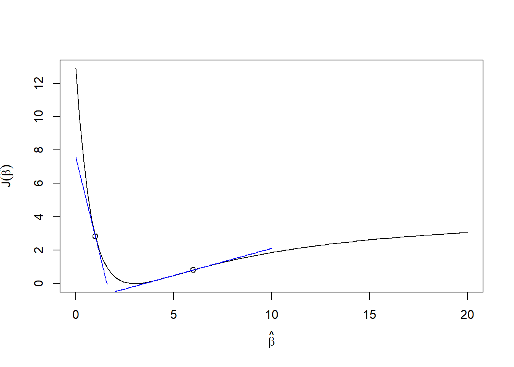

The derivative measures the slope of the line tangent to the curve \(f(x)\) at \(x\). There are a lot of online derivative calculators that will grind out the derivatives should you need to compute one. Nevertheless, it will be valuable to have some of their basic properties on hand. We will use derivatives a lot when optimizing machine learning methods.
Compute \(\frac{d}{dx} |x|\) (Hint: draw a picture of \(f(x)=|x|\))
Compute \(\frac{d}{dx} |a+bx|\)
Compute \(\frac{d}{dx} \frac{1}{1+e^{-x}}\)
2 Optimization
For smooth functions, \(f(x)\), local minima/maxima solve \[
\frac{d}{dx} f(x) = 0
\] The second derivatives help us determine whether a local extreme value is a maximum or a minimum. \[
\begin{split}
\frac{d^2}{dx^2} f(x_\mathrm{max}) &< 0 \\
\frac{d^2}{dx^2} f(x_\mathrm{min}) &> 0
\end{split}
\]
2.1 Quadratic
Find the minimum/maximum for the \(f(x)=ax^2+bx+c\).
\[
\begin{split}
\frac{d}{dx} f(x) &= 2ax+b \\
2a\hat x+b&=0 \\
\hat x&=-\frac{b}{2a}
\end{split}
\] Is it a maximum or a minimum? \[
\begin{split}
\frac{d^2}{dx^2} f(x) &= 2a
\end{split}
\] It is a maximum if \(a<0\) and a minimum if \(a>0\).
2.2 Minimize squared differences with three values
Assume we have three numbers, \(x_1,x_2,x_3\). What value of \(\mu\) minimizes \[
J(\mu)=(x_1-\mu)^2+(x_2-\mu)^2+(x_3-\mu)^2
\]
We have random variables \(Y_1,\ldots,Y_n\) that are all either 0 or 1. They are all independent and have the same probability of equaling 1, \(P(Y_i=1)=p\). These are commonly called Bernoulli random variables. The probability function for Bernoulli random variable is \(P(Y=y)=p^y(1-p)^{1-y}\).
If \(p\) is fixed but unknown, what is the probability of observing the sequence \(y_1,\ldots,y_n\)? This is known as the likelihood function for \(p\). \[
\begin{split}
L(p) &= P(Y_1=y_1,\ldots,Y_n=y_n) \\
&= P(Y_1=y_1)\cdots P(Y_n=y_n) \\
&= p^{y_1}(1-p)^{1-y_1}\cdots p^{y_n}(1-p)^{1-y_n} \\
&= p^{y_1+\ldots+y_n}(1-p)^{1-y_1+\ldots+1-y_n} \\
&= p^{\sum y_i} (1-p)^{n-\sum y_i}
\end{split}
\] This function is a little difficult to optimize. Conveniently, if \(\hat p\) optimizes \(L(p)\) then \(\hat p\) will also optimize \(\log L(p)=\ell(p)\). \[
\begin{split}
\ell(p) &= \log L(p) \\
&= \log \left( p^{\sum y_i} (1-p)^{n-\sum y_i} \right) \\
&= \left(\sum y_i\right) \log(p) + \left(n-\sum y_i\right)\log(1-p) \\
\ell'(p) &= \left(\sum y_i\right) \frac{1}{p} - \left(n-\sum y_i\right)\frac{1}{1-p}
\end{split}
\] Find \(\hat p\) that solves \(\ell'(p)=0\). \[
\begin{split}
0 &= \ell'(\hat p) \\
&= \left(\sum y_i\right) \frac{1}{\hat p} - \left(n-\sum y_i\right)\frac{1}{1-\hat p} \\
&= \left(\sum y_i\right) (1-\hat p) - \left(n-\sum y_i\right)\hat p\\
&= \left(\sum y_i\right) - \hat p\left(\sum y_i\right) - n\hat p+\left(\sum y_i\right)\hat p\\
\hat p &= \frac{\sum y_i}{n}
\end{split}
\] This shows that the maximum likelihood estimator for \(p\) is the sample mean of the \(y_i\)s, the same as the commonsense estimate that you would have used.
2.5 Exercises
Find \(\hat x\) that optimizes \(f(x)=2x+\frac{200}{x}\). Is it a maximum or a minimum?
Find \(\hat x\) that optimizes \(f(x)=\log(x)+\log(1-x)+3\). Is it a maximum or a minimum?
Find \(\hat t\) that optimizes \(f(x)=100+\frac{800t}{t^2+90000}\). Is it a maximum or a minimum?
Find \(\hat p\) that optimizes \(\ell(p)=6\log(p)+10\log(1-p)\). Is it a maximum or a minimum?
3 Gradient descent
Often we will not be able to directly solve \(\frac{d}{dx} f(x) = 0\). The best we can do is figure out how to move a guess for the optimal value of \(x\) toward the optimal value. Let’s simulate some data where \(x\) are a bunch of random standard normal values and \(y=\frac{1}{1+\exp(-3x)}\) and we will let \(J\) be squared error.
x <-rnorm(100)y <-1/(1+exp(-3*x))# squared errorJ <-function(b, x, y){ yhat <-1/(1+exp(-b*x))return( sum((y-yhat)^2) )}# derivative of J with respect to bdJ <-function(b, x, y){ yhat <-1/(1+exp(-b*x))return( sum(-2*(y-yhat)*yhat*(1-yhat)*x) )}b <-seq(0,20, length.out=100)J0 <-sapply(b, function(beta0) J(beta0,x,y))plot(b,J0, type="l", xlab=expression(hat(beta)), ylab=expression(J(hat(beta))))points(c(1,6),c(J(1,x,y),J(6,x,y)))curve(dJ(1,x,y)*(b-1) +J(1,x,y), add =TRUE, col ='blue', xname="b",from=0,to=1.6)curve(dJ(6,x,y)*(b-6) +J(6,x,y), add =TRUE, col ='blue', xname="b",from=2,to=10)

Figure 1: An example \(J(\beta)\) showing tangent lines at two points
Consider Figure 1. Here we have a loss function that has its minimum around \(\hat\beta=3\) (as it should since we simulated it to be so). If we evaluate the derivative at \(\hat\beta=6\), then we get a positive slope, telling us that the optimal \(\beta\) is smaller than 6. If we evaluate the derivative at \(\hat\beta=1\), then we get a negative slope, telling us that the optimal \(\hat\beta\) is larger.
This suggests an optimization process that iteratively adjusts our guess for the optimal \(\hat\beta\) as \[
\hat\beta \leftarrow \hat\beta - \lambda J'(\hat\beta)
\] where \(\lambda\) is a small value representing a “step size” or a “learning rate”.
3.1 Taylor series and Newton’s method
For any well-behaved function (smooth, with derivatives), Taylor series approximations can come in handy.
Typically, we will just use the series up to the quadratic term to approximate \(J\)s that are hard to analyze otherwise. Let’s say that we have a \(J(x)\) that we want to optimize, but our algebra tricks do not help us figure out its optimal value. A quadratic Taylor series approximation is \[
J(x)\approx J(x_0)+J'(x_0)(x-x_0)+\frac{1}{2}J''(x_0)(x-x_0)^2
\] If we have a starting value, \(x_0\), then we can optimize the right-hand side to find a new candidate for the optimal value. If we take a derivative with respect to \(x\) (not \(x_0\)!) we arrive at \[
J'(x)\approx J'(x_0) + J''(x_0)(x-x_0)
\] Now let’s find an \(x\) that optimizes this expression. \[
\begin{split}
J'(x_0) + J''(x_0)(\hat x-x_0) &= 0 \\
\hat x &= x_0 - \frac{J'(x_0)}{J''(x_0)}
\end{split}
\tag{1}\] This implies that if we have a guess, \(x_0\), for the optimal value, then we should be able to get a better guess by calculating (1). We will need to repeat this several times until it converges on a final answer. This is known as Newton’s method.
Example In a previous exercise we optimized \(\ell(p)=6\log(p)+10\log(1-p)\) directly. Let’s pretend it was too hard and try Newton’s method on this one instead. \[
\begin{split}
\ell(p) &= 6\log(p)+10\log(1-p) \\
\ell'(p) &= \frac{6}{p}-\frac{10}{1-p} \\
\ell''(p) &= -\frac{6}{p^2}-\frac{10}{(1-p)^2} \\
\hat p &= p_0 - \frac{\ell'(p_0)}{\ell''(p_0)} \\
&= p_0 - \frac{\frac{6}{p_0}-\frac{10}{1-p_0}}
{-\frac{6}{p_0^2}-\frac{10}{(1-p_0)^2}} \\
&= p_0 + \frac{p_0(1-p_0)(3-8p_0)}
{3-6p_0+8p_0^2}
\end{split}
\] There are plenty of examples where Newton’s method does not work well (slow to converge) or at all (diverges or converges to a local maximum/minimum). For example, if we started with \(p_0=0\) or \(p_0=1\), then for this problem \(\hat p\) would get stuck at 0 or 1 and never move to a better value. Also note that if we started at \(p_0=\frac{3}{8}\) then it also does not change, but that is because \(\frac{3}{8}\) is the right answer!
Running this in R shows that it converges to the exact answer in just a few steps
p <-0.1# newton iterationsfor(i in1:6){ p <- p + p*(1-p)*(3-8*p)/(3-6*p+8*p^2)print(p)}
R has built-in optimization functions that you can use for any similar optimization problem. You just need to specify the function, the first derivative (also called the gradient), and the second derivative (also called the Hessian), and then pass those functions to nlm(). Note that nlm() only solves minimization problems. So, if you have a maximization problem, just multiply all your functions and derivatives by -1 to make it a minimization problem.
f <-function(p){ res <--(6*log(p)+10*log(1-p))attr(res, "gradient") <--(6/p -10/(1-p))attr(res, "hessian") <-6/p^2+10/(1-p)^2return(res)}nlm(f, 0.1)
Machine learning models never have a single parameter. The latest ones in the news have trillions of parameters. We will end up optimizing functions of many parameters, so we need some tools to compute derivatives of functions with many parameters.
If \(J(\alpha,\beta)\) then there are two partial derivatives \[
\begin{split}
\frac{\partial}{\partial\alpha} J(\alpha,\beta) &= \left.\frac{dJ}{d\alpha}\right\rvert_\beta \\
\frac{\partial}{\partial\beta} J(\alpha,\beta) &= \left.\frac{dJ}{d\beta} \right\rvert_\alpha
\end{split}
\] In each of these, the parameter that is not the focus of the derivative is treated as a fixed constant.
We will encounter models with many parameters with derivatives requiring a rather deep level of using the chain rule, especially when we get to backpropagation in neural networks. For example, \[
\begin{split}
J(\beta_0,\beta_1,\ldots,\beta_d) &= \sum_{i=1}^n (y_i-\hat y_i)^2 \\
\hat y_i &= \frac{1}{1+e^{-z_i}} \\
z_i &= \beta_0 + \beta_1x_{1i} + \ldots + \beta_dx_{di}
\end{split}
\] To figure out the “direction” to move \(\beta\) in order to optimize \(J\) we need to work through several levels of derivatives. \[
\begin{split}
\frac{\partial J}{\partial\hat y_i} &= -2(y_i-\hat y_i) \\
\frac{\partial\hat y_i}{\partial z_i} &=
\frac{e^{-z_i}}{(1+e^{-z_i})^2} =
\frac{1}{1+e^{-z_i}}\frac{e^{-z_i}}{1+e^{-z_i}} = \hat y_i(1-\hat y_i) \\
\frac{\partial z_i}{\partial \beta_j} &= x_{ji}
\end{split}
\] If we want to know how changes in a particular \(\beta_j\) change the value of \(J\) then we chain all the derivatives together. \[
\begin{split}
\frac{\partial J}{\partial\beta_j} &= \frac{\partial J}{\partial\hat y_1} \frac{\partial\hat y_1}{\partial z_1} \frac{\partial z_1}{\partial \beta_j} + \ldots + \frac{\partial J}{\partial\hat y_n} \frac{\partial\hat y_n}{\partial z_n} \frac{\partial z_n}{\partial \beta_j} \\
&= \sum_{i=1}^n -2(y_i-\hat y_i) \hat y_i(1-\hat y_i) x_{ji}
\end{split}
\] The gradient is the collection of derivatives assembled into a single vector and is usually denoted as \(\nabla J\) (spoken as “gradient of \(J\)” or “del \(J\)”). \[
\nabla J=\begin{bmatrix} \frac{\partial J}{\partial\beta_0} \\ \vdots \\ \frac{\partial J}{\partial\beta_d} \end{bmatrix}
\]
3.3 Multivariate gradient descent
The gradient “points” in the direction that we need to move our current choice of \(\beta\) to optimize \(J(\beta)\). That is, if we have a current guess for \(\hat\beta\), then we can find an improved guess (one that makes \(J(\beta)\) even smaller), by adjusting our guess as \[
\begin{split}
\hat\beta &\leftarrow \hat\beta - \lambda\begin{bmatrix} \frac{\partial J}{\partial\beta_0} \\ \vdots \\ \frac{\partial J}{\partial\beta_d} \end{bmatrix} \\
&= \hat\beta - \lambda\nabla J
\end{split}
\] for some \(\lambda\) that is sufficiently small.
We will get more into this when we pick up some linear algebra skills and matrix derivatives.
4 Summary
We have complete a quick review of differential calculus concepts essential for understanding optimization and machine learning algorithms.
Found local maxima and minima using first and second derivatives
Solved common optimization problems (minimizing squared differences, estimating probabilities for Bernoulli random variables)
Gradient Descent:
Reviewed Taylor series approximations for analyzing complex functions
Used gradient descent as an iterative optimization method for finding minima when direct solutions are infeasible
Multivariate Gradient Descent:
Extended calculus principles to multivariate functions, introducing partial derivatives and gradients
Introduced gradient descent for multivariate functions
One important innovation in recent decades is efficient “auto-differentiation” algorithms, “autodiff” for short. The methods can take computer code that evaluates a model’s performance and automatically write additional code to compute the gradients. These autodiff methods have become essential in scientific computing (such as Hamiltonian Markov Chain integration) and in learning neural networks. Common neural network software, like TensorFlow and PyTorch, rely on autodiff methods to efficiently compute gradients necessary for optimizing neural networks. Advances have been particularly large on using GPUs (graphical processing units) to run autodiff methods.